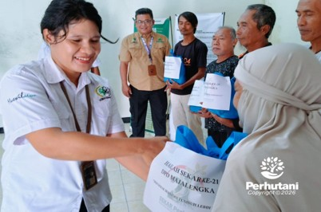

MAJALENGKA, PERHUTANI (14/01/2026) | Hari Lahir (Harlah) Serikat Karyawan (Sekar) Ke-21 Dewan Pengurus Daerah (DPD) Perhutani Kesatuan Pemangkuan Hutan (KPH) Majalengka mengadakan tasyakuran dan pemberian Tali Asih kepada sejumlah Masyarakat sekitar lingkungan kantor KPH Majalengka, Senin (12/01).
Hadir dalam Acara tersebut Administratur KPH Majalengka Suparno, Sekjen Sekar Perhutani, Warnita, DPD Sekar KPH Majalengka, Elisabeth Wahyuni Meosido dan Pengurus Sekar beserta anggota, hadir pula masyarakat sekitar lingkungan kantor KPH Majalengka.
Administratur Perhutani KPH Majalengka, Suparno mengatakan, Saya ucapkan selamat ulang tahun yang ke-21 tahun bagi Sekar Perhutani. Semoga kedepan Sekar Perhutani bisa lebih mampu menjaga eksistensi perusahaan dan memperjuangkan aspirasi karyawan. Tantangan eksternal dan regulasi kini semakin berat, diharapkan Sekar Perhutani bisa ambil peran dan turut mendukung menghadapi setiap tantangan yang ada,” katanya.
Ketua DPD Sekar Perhutani Majalengka Elisabeth Wahyuni Meosido mengatakan bahwa Peringatan Hari Lahir Sekar yg ke 21 tahun 2026 Sesuai surat DPP Nomor : 74/DPP-Sekar/I/2026 tanggal 09 Januari 2026 perihal Kegiatan Harlah Sekar Ke 21 Tahun 2026, pada poin keempat untuk segenap pengurus DPW dan DPD Sekar Perhutani agar di peringati dengan kegiatan positif, yaitu pembagian sembako kepada masyarakat yang membutuhkan di sekitar kantor Perum Perhutani KPH Majalengka.
Adapun harapan di Harlah ke-21 dengan kepengurusan Sekar yang baru, semoga bisa mewujudkan aspirasi – aspirasi yang belum terealisasi, dan sesuai tema BERGERAK BERSAMA TUMBUH LEBIH KUAT “,ungkap Elis.
Hadir dalam acara Harlah Sekar ke-21 Sekjend Dewan Pengurus Pusat (DPP) Sekar Perum Perhutani Warnita, S.Hut dalam sambutannya mengatakan, “Serikat Karyawan merupakan wadah aspirasi bagi karyawan Perhutani untuk memperjuangkan eksistensi perusahaan dan kesejahteraan karywan, di Harlah Sekar ke-21 tahun 2026 ini sesuai Tema BERGERAK BERSAMA, TUMBUH LEBIH KUAT artinya mari kita sebagai anggota Sekar untuk bergerak bersama manajemen secara berjenjang bersama-sama mengawal kinerja lebih baik untuk meningkatkan pendapatan perusahaan, dan mari kita kawal bersama Perjanjian Kerja Bersama (PKB) periode 2025-2027 yang sudah ditandatangani oleh manajemen dan serikat”, ujarnya.
Terpisah, Yanto sesepuh penerima tali asih mengucapkan, terimakasih atas pemberian tali asih dari Sekar DPD KPH Majalengka dan selamat hari jadi Serikat Karyawan Perhutani yang ke-21, semoga selalu eksis dan kedepan Perhutani semakin jaya,” tuturnya.
Editor: WK
Copyright © 2026 Warta Nusantara Barat